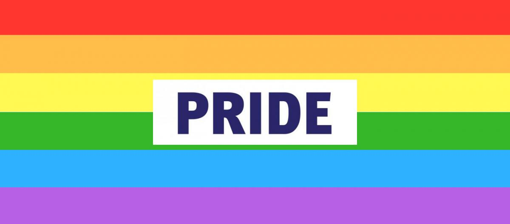
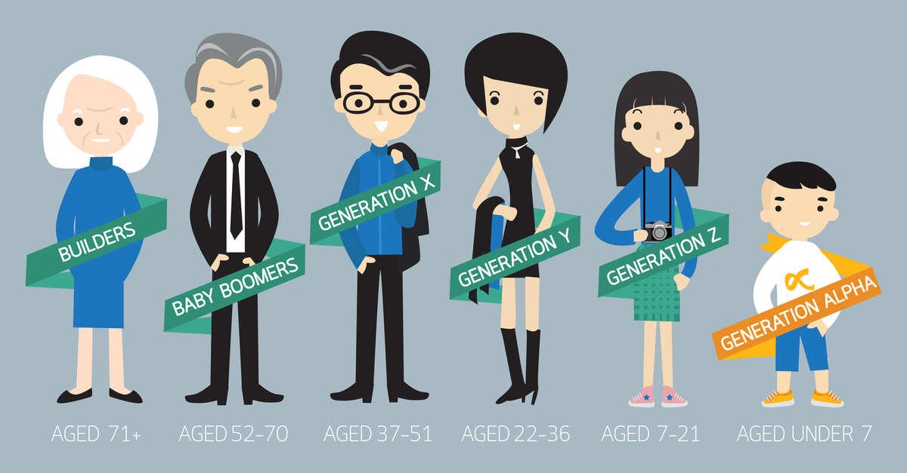
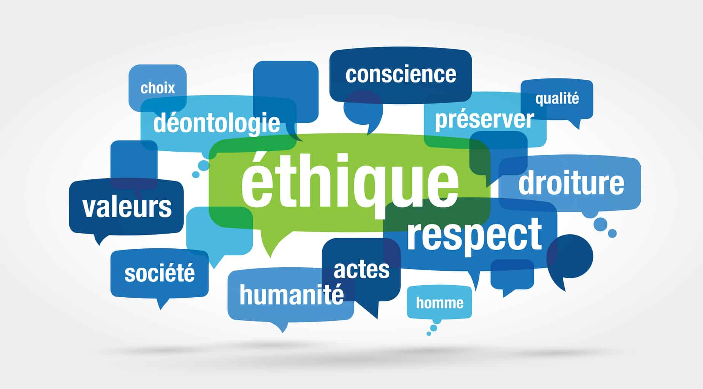

Dassault Systèmes posséde des valeurs encrées qui constituent son identité.
Sommaire de l'article :
Inclusion et Diversité
Mixité de genre
Handicap
Fiertés
Identité
Générations
Éthique et conformité
Développement Durable
Inclusion et Diversité
Ayant un fort engagement, Dassault systèmes crée un Conseil du développement durable
qui rassemble des cadres de 3DS afin de faire progresser leur stratégie d'inclusion
et leur plan d'action. Il célèbre également leurs cinq piliers d'inclusion et
de diversité de multiples façons chaque année et compte sur leurs champions locaux
pour susciter le soutien et la sensibilisation à la fois en interne et en externe.
Dassault Systèmes a 5 piliers lister ci-dessous.
Mixité de genre
Dassault Systèmes veille à respecter les réglementations applicables en matière d’égalité professionnelle et de non-discrimination dans les pays dans lesquels il emploie ses collaborateurs.
En 2021, le comité exécutif opérationnel est constitué de 12 membres, dont 5 femmes. Au 31 décembre 2020, 26,6 % des salariés étaient des femmes, représentant 20,5% des managers. A ce titre, Dassault Systèmes figure à la 8ème place du palmarès de la féminisation des instances dirigeantes de l’index SBF 120.
Témoignant de cet engagement pour la mixité au sein de l’entreprise, Dassault Systèmes SE a obtenu la note globale de 95 points sur 100 à l’index égalité femme homme.
En 2012, Dassault Systèmes a lancé sa communauté 3DS WIN (Women INitiative) qui compte aujourd’hui plus de 1 500 membres au niveau mondial.
En France ce sont près de 500 3DS WINers, femmes et hommes qui œuvrent ensemble pour attirer et recruter de nouveaux talents féminins, inspirer et reconnaître les femmes en leur permettant d’accélérer leur évolution de carrière chez Dassault Systèmes.
Cette communauté a pour objectif d’encourager la mixité des profils en entreprise et au sein des filières universitaires. Notamment en accompagnant des associations qui promeuvent des carrières scientifiques (STEMS) auprès des jeunes femmes afin de générer des vocations chez celles-ci. Mais également en attirant, en encourageant et en faisant grandir les talents féminins au sein de nos effectifs.
Dassault Système s’engage depuis toujours pour plus d’égalité et de diversité pour une société plus inclusive et durable.
Handicap
Si l’on déclare sa situation de handicap en travaillant chez Dassault Systèmes SE il s'engage alors à étudier les solutions adaptées aux répercussions sur notre état de santé ou de notre handicap sur notre vie professionnelle.
Et l’on pourrais de ce fait bénéficier des mesures suivantes:
- Un accompagnement spécifique permettant la compensation du handicap et facilitant notre
maintien en activité professionnelle
- Des aides adaptées à notre situation et nos besoins prévues dans l'accord
- Un accompagnement de 3DS dans nos démarches .
Ceux qui peuvent en bénéficier sont : les personnes ayant obtenu une Reconnaissance de Travailleur Handicapé ou RQTH) ou ayant une incapacité partielle permanente (IPP) d'au moins 10% et les titulaires d'une pension d'invalidité ou d'une carte d'invalidité (> 80%)
Fiertés

Consciente des enjeux liés à la diversité, de plus en plus d’entreprises s’engagent pour la reconnaissance des droits des personnes LGBT (lesbiennes, gays, bisexuels et transgenres) au sein de leurs organisations dont Dassault Systèmes. Afin qu’il aie une inclusion total de tous les employés, il y as une mise en place du comité américain PRIDE (Professionals Inspiring Dignity and Equality) qui a pour but de:
Former une communauté de membres, amis et alliés en faveur du soutien, du réseautage, du parrainage et de la formation des personnes LGBTQIA+.
Accompagner 3DS dans ses démarches de recrutement et de rétention des salariés en faveur des droits de la communauté LGBTQIA+.
Fournir à Dassault Systèmes et à ses collaborateurs des ressources pour créer un environnement de travail plus inclusif et des politiques d’entreprise en ce sens.
Identité
La communauté de Dassault Systèmes est constitué de plus de 147 nationalités. Ils travaillent tous ensemble et partagent le même but et les mêmes valeurs.
Ils ont tous des origines, antécédents, histoires, cultures et expériences différents.
De ce fait la diversité, le travail collaboratif, les communautés et l’aide mutuelle sont au cœur de la culture d’entreprise de Dassault Systèmes.
Générations

Chez Dassault Systèmes, il y as un apprentissage et un partage des savoir afin que la réussite se partage en équipe.
Nous sommes convaincus que les meilleures innovations naissent du partage de l’expérience et de l’expertise de chacun au sein d’une communauté internationale créative et passionnée.
Mentorat, mentorat inversé, « Workforce of the Future», EDU ... plusieurs programmes internes favorisent une plus grande inclusion au fil du temps.
Éthique et conformité

Pour Dassault Systèmes, la promotion d'une croissance durable et éthique est une valeur fondamentale. Elle fait partie intégrante de leur politique de responsabilité sociale.
Il promeut donc une forte éthique des affaires.
L’engagement de Dassault Systèmes en matière d’éthique professionnelle et de responsabilité d’entreprise se concrétise par : des règles applicables à l’ensemble des collaborateurs de l’Entreprise, un système de gouvernance de l’éthique et de la conformité et la sensibilisation et la formation des collaborateurs.
Développement Durable
Dassault Systèmes a une approche du développement durable qui s’accompagne d’objectifs pour 2025 dont: objectif d'émissions de carbone FONDÉ SUR LA SCIENCE & objectif de 5 tonnes de CO2/ETP*, 2/3 des nouvelles licences de solutions/processus ont un impact positif sur le développement durable, travailler avec 5000 parties prenantes (collaborateurs, fournisseurs, clients, étudiants, organisations à but non lucratif) et lancer un événement annuel sur l'innovation durable.
Dassault Systèmes veille à respecter les réglementations applicables en matière d’égalité professionnelle et de non-discrimination dans les pays dans lesquels il emploie ses collaborateurs.
En 2021, le comité exécutif opérationnel est constitué de 12 membres, dont 5 femmes. Au 31 décembre 2020, 26,6 % des salariés étaient des femmes, représentant 20,5% des managers. A ce titre, Dassault Systèmes figure à la 8ème place du palmarès de la féminisation des instances dirigeantes de l’index SBF 120.
Témoignant de cet engagement pour la mixité au sein de l’entreprise, Dassault Systèmes SE a obtenu la note globale de 95 points sur 100 à l’index égalité femme homme.